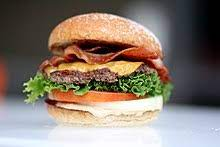

Burger
A hamburger or simply burger is a food consisting of fillings—usually a patty of ground meat, typically beef—placed inside a sliced bun or bread roll. Hamburgers are often served with cheese, lettuce, tomato, onion, pickles, bacon, or chilis; condiments such as ketchup, mustard, mayonnaise, relish, or a "special sauce", often a variation of Thousand Island dressing; and are frequently placed on sesame seed buns. A hamburger patty topped with cheese is called a cheeseburger.
Hamburgers are often sold at fast-food restaurants and diners, but are also sold at various other restaurants. There are many international and regional variations of hamburger. Some of the largest multinational fast-food chains have a burger as one of their core products: McDonald's Big Mac and Burger King's Whopper have become global icons of American culture.